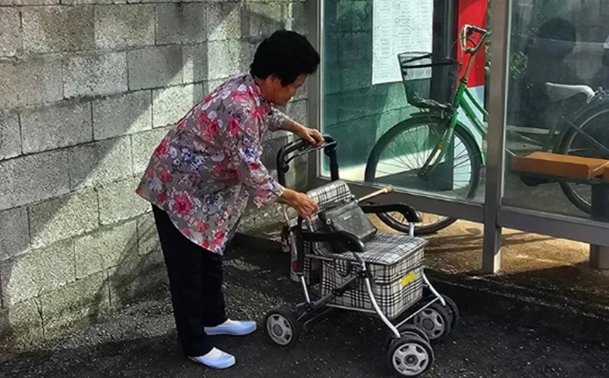
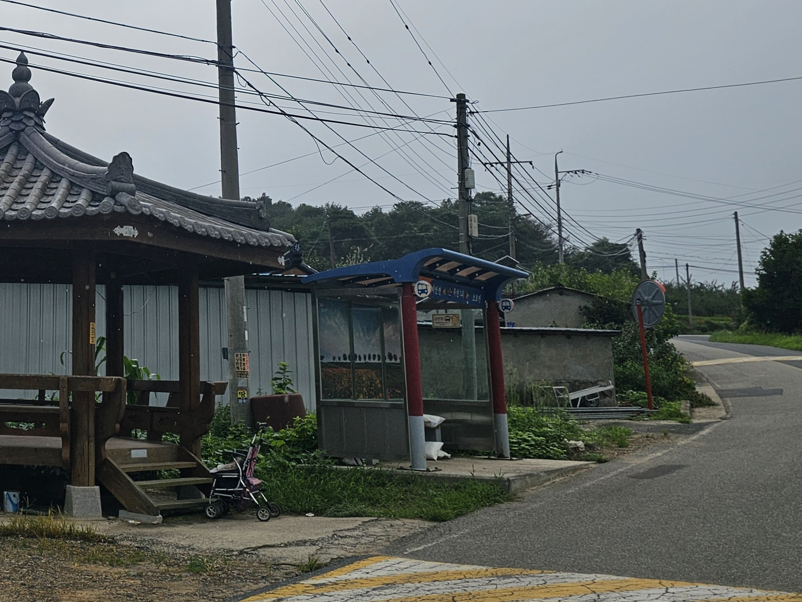
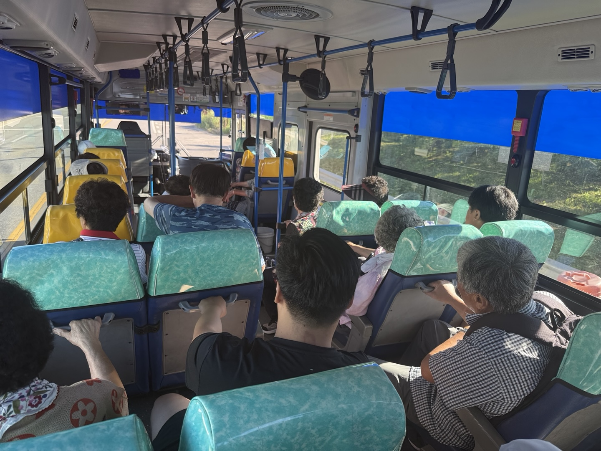

문제의 한가운데
그런데 읍내에서는 실버카를 쓸 수 없습니다
실버카 평균 무게는 8kg. 농어촌버스를 타려면 30cm 안팎의 계단을 2~3칸 오르내려야 한다. 허리·무릎을 앓는 어르신이 무거운 실버카를 들고 버스 계단을 오르내리는 건 버거운 일이다. 결국 어르신들은 실버카를 정류장에 두고 버스에 오른다.


면 지역 이동은 마을회관·이웃집처럼 짧지만, 읍내에 나오면 병원·시장·미용실로 동선이 넓어진다. 가장 많이 움직여야 하는 읍내에서, 정작 실버카가 없다.
특히 장날이면 버스는 짐보따리를 든 어르신으로 가득 찬다. 그런데 버스 안에는 실버카가 한 대도 보이지 않는다. 실버카는 면 지역 정류장 한편에 덩그러니 남는다.


장날, 실버카 없이 버티는 시간
75분
'실버카 공백구간' — 버스로 읍내에 나온 어르신이 지팡이에 의지해 버티는 평균 시간
실버카 이용자 10명 중 9명 이상이 농어촌버스에 실버카를 싣지 못한다고 답했다
"힘들어서 여기서 쉬었다 가야 해. 실버카 있으면 물건도 넣고 훨씬 편하지, 지팡이 들면 허리도 아프고 힘들어."
버스 정류장에서 쉬던 할머니